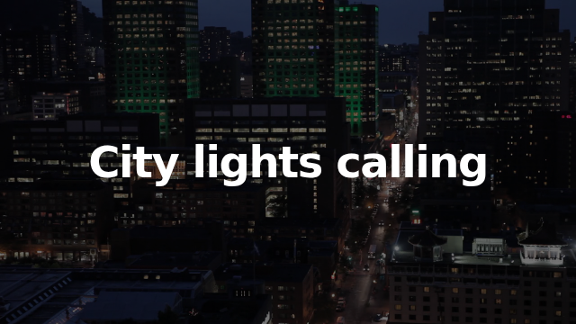
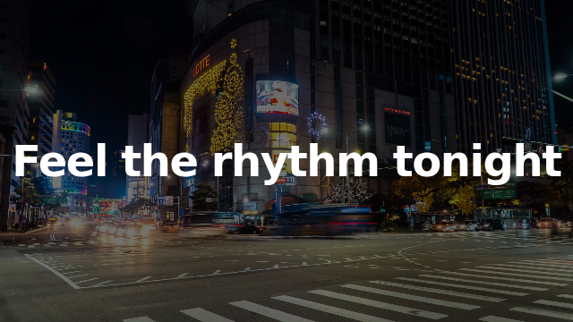
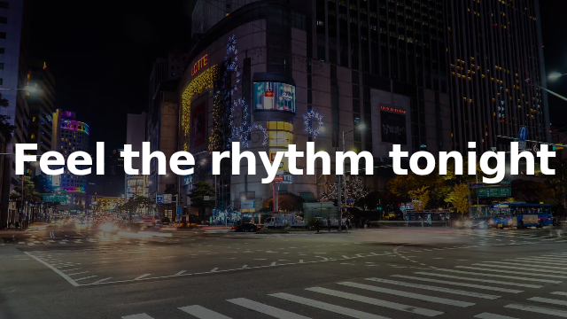

AI-powered auto video editor. Provide music + text + videos + images in a
data.json spec, get back a ready-to-render Remotion project with
random typography effects (30 remocn components), beat-synced scene cuts,
and Pixabay B-roll. 100% offline, no cloud.
Generated from data.json with 5 text overlays + 8 stock videos + 9 stock images.
Music: DEMI - HomeBody. B-roll: Pixabay API. 15s preview (full composition is 2:21).
Text-driven video — each text[] entry becomes one scene with a random
typography effect from 30 remocn registry components. Pure typography, no player UI.
Single-frame renders from the typography v3 composition at different timestamps.



The full AI Video Editor pipeline — implemented end-to-end in audio2scene v0.5.
The input that generated these videos. Provide music + text + videos + images.
Generate + install + render in one command. Use --fast for 4x faster preview.